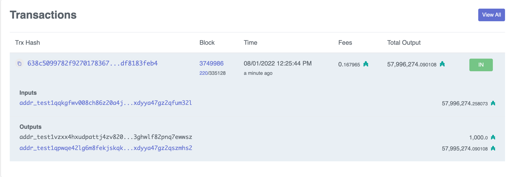

#
Wallets setup & funding

#
Key pair
The key pair consists of:
- Private key (signature) ⟶ .skey
- Public key (verification) ⟶ .vkey
#
Socket
Recall that if you want to run cardano-cli commands on-chain, you need to export the path variable on the current shell:
export CARDANO_NODE_SOCKET_PATH=/Users/antonio/code/haskell/emurgo/testnet/node.socketNote: Cardano socket is created automatically when you start the Cardano node for the first time.
#
Testnet magic
Current Testnet magic is 1097911063
#
Protocol parameters
We query the testnet protocol parameters and save them on a file on the testnet directory.
$ cardano-cli query protocol-parameters --testnet-magic 1097911063 --out-file ~/code/haskell/emurgo/testnet/testnet-protocol-params.json
#
Addresses
"Enterprise" addresses (only for payment)
Payment + Staking
KES address ("evolutionary", stake pool operators need to renew every 90 d)
External with staking
Internal with staking
External without staking
All addresses are derived from hashing the public key.
#
Generating credentials
Generating key pair
$ cardano-cli address key-gen --verification-key-file myWallet1.vkey --signing-key-file myWallet1.skey $ $ ls myWallet1.skey myWallet1.vkeyGenerating address
$ cardano-cli address build --payment-verification-key-file myWallet1.vkey --testnet-magic 1097911063 --out-file myWallet1.addr $ ls myWallet1.addr myWallet1.skey myWallet1.vkey $ $ # For curisoity, generate mainnet address (which we will not use) $ cardano-cli address build --payment-verification-key-file myWallet1.vkey --mainnet --out-file myWallet1M.addr $ ls myWallet1.addr myWallet1.vkey myWallet1.skey myWallet1M.addr
#
Funding the wallet
Now that we have an address in myWallet1.addr, we fund the wallet using the Faucet.
We only fund wallet 1 in this manner. Wallet 2 is funded by building a transaction, as explained below. (If we wanted to use the faucet to fund wallet 2 as well we would need to wait at least 24 hours.)
#
Querying a wallet address
$ pwd
/Users/antonio/code/haskell/emurgo/priv
$
$ cardano-cli query utxo --address $(cat myWallet1.addr) --testnet-magic 1097911063 TxHash TxIx Amount
--------------------------------------------------------------------------------------
638c5099782f9270178367178ffffeb077f921cefe670612b1ea99df8183feb4 0 1000000000 lovelace + TxOutDatumNoneCan verify funds at Cardanoscan (testnet)

#
Transactions
#
Building the transaction
Script
File
tx_draft.shcardano-cli transaction build \ --babbage-era \ --testnet-magic 1097911063 \ --tx-in 638c5099782f9270178367178ffffeb077f921cefe670612b1ea99df8183feb4#0 \ --required-signer myWallet1.skey \ --tx-out $(cat myWallet2.addr)+"300000000 lovelace" \ --change-address $(cat myWallet1.addr) \ --protocol-params-file ../testnet/testnet-protocol-params.json \ --out-file tx.draft $ chmod u+x tx_draft.shExecution
$ ./tx_draft.sh Estimated transaction fee: Lovelace 171573 $ $ # which produces: $ cat tx.draft { "type": "TxBodyBabbage", "description": "", "cborHex": "86a40081825820638c5099782f9270178367178ffffeb077f921cefe670612b1ea99df8183feb4000182a200581d608c6adcdc687ab5caa261d4f7ce7156d83b90860e7638a2eefa4ea0cc011a29b688cba200581d600852c087a3e75a4ff877cd08b47027eac946f32cb72cde805da230f1011a11e1a300021a00029e350e81581c8c6adcdc687ab5caa261d4f7ce7156d83b90860e7638a2eefa4ea0cc9fff8080f5f6" }
#
Signing the transaction
Script
File
tx_signed.shcardano-cli transaction sign \ --tx-body-file tx.draft \ --signing-key-file myWallet1.skey \ --testnet-magic 1097911063 \ --out-file tx.signed $ chmod u+x tx_signed.shExecution
$ ./tx_signed.sh $ $ # which produces: $ cat tx.signed { "type": "Tx BabbageEra", "description": "", "cborHex": "84a40081825820638c5099782f9270178367178ffffeb077f921cefe670612b1ea99df8183feb4000182a200581d608c6adcdc687ab5caa261d4f7ce7156d83b90860e7638a2eefa4ea0cc011a29b688cba200581d600852c087a3e75a4ff877cd08b47027eac946f32cb72cde805da230f1011a11e1a300021a00029e350e81581c8c6adcdc687ab5caa261d4f7ce7156d83b90860e7638a2eefa4ea0cca100818258207fd4a6131432173c843689d13c64b3e616671efa411fb5a812450a28c9ff3088584022abcef02b26e7e8f91bea7ff98b2e6018cd4833998693d190019ff7b6f5fd9091318294b6b27f55a098e44b28d7c3061369762de43f8e7952168ce743a52d08f5f6" }
#
Submitting the transaction
We first query the utxo's at wallet 2 before the transaction:
$ cardano-cli query utxo --address $(cat myWallet2.addr) --testnet-magic 1097911063
TxHash TxIx Amount
--------------------------------------------------------------------------------------Submit the transaction:
$ cardano-cli transaction submit --testnet-magic 1097911063 --tx-file tx.signed
Transaction successfully submitted.
#
Final balances
Query the utxo's at wallet 2 after the transaction:
$ cardano-cli query utxo --address $(cat myWallet2.addr) --testnet-magic 1097911063
TxHash TxIx Amount
--------------------------------------------------------------------------------------
30eea3e9228b94cad0cbfb131f65ebf3e9d5b24820394dca8408920037797e64 1 300000000 lovelace + TxOutDatumNoneOf course, the balance of wallet 1 must have diminished:
$ cardano-cli query utxo --address $(cat myWallet1.addr) --testnet-magic 1097911063 TxHash TxIx Amount
--------------------------------------------------------------------------------------
30eea3e9228b94cad0cbfb131f65ebf3e9d5b24820394dca8408920037797e64 0 699828427 lovelace + TxOutDatumNone